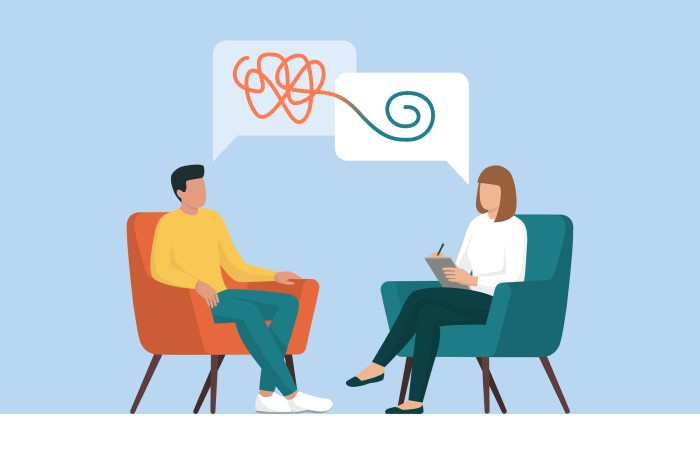

Como podemos te ajudar?
Nós entendemos que muitas pessoas passam por situações muito ruins durante a vida, e isso pode acabar causando um mau que as afeta, e faz que ela se sintam fora do mundo, se sintam sozinhas e dispersas da realidade.
O nosso intuito com esse site, é ajudar as pessoas a se encontrarem novamente, é dar um novo horizonte para que entendam a situação que estam, e possam superar esse momento de suas vidas.
Como faremos isso?
Entendemos que ninguém é igual, cada tem sua individualidade e seu jeito de ser, e por conta disso, buscamos os melhores métodos para conseguir incluir a maior parte de pessoas nesse projeto.
Como já foi dito anteriormente cada um tem seus problemas, então tentaremos utilizar vários métodos diferenciados, para alcançar o máximo de pessoas.
Quais vão ser nossos métodos?
Filosofia
Estudo
Exercicios
Ajuda profissional
A filosofia, especialmente a filosofia existencial, pode ajudar os indivíduos a explorar questões fundamentais sobre a vida, o propósito, a liberdade e a identidade. Isso pode levar a uma maior autoconsciência e compreensão das próprias experiências emocionais, o que por sua vez pode facilitar o processo terapêutico.
O estudo pode te ajudar a descobrir mais sobre o mundo, assim como a filosofia, mas o estudo tem um papel mais amplo no mundo.Ele vai fazer com que você tenha um novo olhar sobre o mundo, já que terá novos conhecimentos, não terá problemas em explorar e decidir se abrir pra novas coisas.

Os exercícios vão te ajudar a moldar um novo corpo, porém não é só isso, a musculação, ou artes marciais vão te ajudar a desenvolver um novo pensamento, você irá conseguir ter um pensamento mais focado e crítico no que tem que fazer. Os exercícios também irão te ajudar na distribuição hormonal, já que a seratonina e Testosterona vão ser distribuidas da maneira correta pelo seu corpo.
A ajuda profissional é a mais indicada, já que é feito por alguém que é especializado em um área que vai te ajudar, o profissional é chamado de psicólogo.Ele vai fazer testes e diagnósticos com você, para tentar descobrir quais são os seus problemas e como ele vai poder te ajudar a resolve-los.
